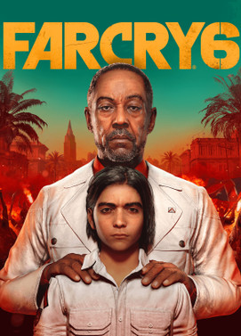

Far Cry 6 - Ubisoft
Sobre el Juego
En este impresionante y hermoso lugar, con una arquitectura soberbia, aunque antigua, el malvado dictador, Antón Castillo (interpretado de forma maestra por Giancarlo Esposito) tiene una lección que enseñarle a su hijo. Le entrega al chico, Diego, una granada, sujeta el mecanismo de disparo y saca el pasador. Así, explica, es cómo es la gente: obediente siempre que esté sujeta con firmeza. Sin embargo, siéntete demasiado relajado con ellos y ... Boom.
Esta lección es la forma en que El Presidente trata de endurecer a su hijo, preparándolo para que le suceda en su brutal régimen. Curiosamente, no se le muestra como un tipo malvado al uso: tiene sus razones para su comportamiento que son, al menos para él, sensatas. El hecho de que la gente necesite un agarre firme para que las cosas no se pongan ruidosas, sangrientas y algo efímeras, por lo menos para los Castillo, está respaldado por la existencia de la resistencia. Que es donde entras tú.
Eres un rebelde, un luchador de la resistencia con el nombre de Dani Rojas (puedes elegir tu género al comienzo del juego: con el Dani masculino con la voz de Sean Rey y la mujer con Nisa Gunduz). Puedes fabricar tus propias armas si es necesario y contratar compañeros (caninos) para que te ayuden en tus hazañas. Uno de ellos es Chorizo, un adorable perro salchicha en una silla de ruedas canina. No te podrás resistir a que te acompañe.
Los gráficos maravillosamente detallados se ven casi como imágenes de video estilizadas, incluso más hermosas que la vida real, aunque sin dejar de ser realistas. Puedes jugar con tus amigos de la vida real en el modo multijugador cooperativo que regresa en esta edición.
Algunos Antecedentes
Todo luchador por la libertad necesita información, y tú no eres diferente. La acción del juego se desarrolla en medio de los disturbios que están perturbando la inquietante paz de la isla: la gente se ha cansado abiertamente de la mano de hierro de Antón Castillo y sin duda está inquieta por el crecimiento de Diego, sabiendo que el niño se pondrá en su lugar para reemplazar a su padre en solo unos años.
Dani (tú) está en el corazón de la acción, luchando en los tejados y en los callejones, y vigilando a los pocos que todavía apoyan a El Presidente. Algunas personas votaron por él, pero la mayoría ahora se está dando cuenta de que su inmensa y orgullosa fuerza es una fachada, una que el joven Antón construyó alrededor de sí mismo al ver a su propio padre ejecutado poco antes de que él mismo tomara el poder.